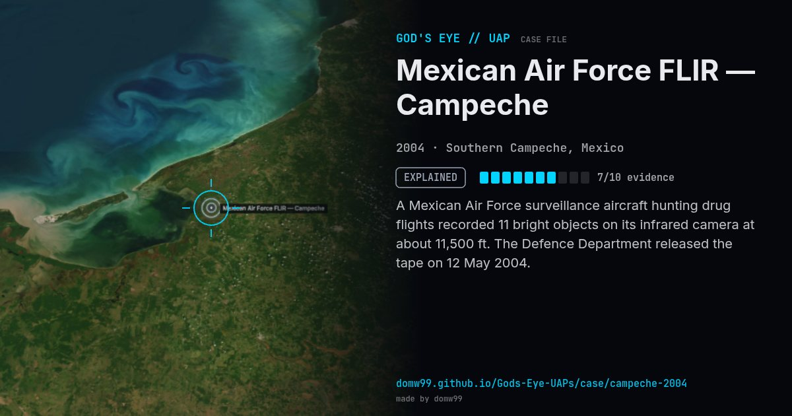

Mexican Air Force FLIR — Campeche
EXPLAINED

A Mexican Air Force surveillance aircraft hunting drug flights recorded 11 bright objects on its infrared camera at about 11,500 ft. The Defence Department released the tape on 12 May 2004.
Explanation
Most analysts identified the lights as gas flares on Cantarell offshore oil platforms seen over the horizon by the infrared camera.
What was seen
Shape: 11 bright infrared lights
Witnesses: Mexican Air Force Merlin C-26A crew
Duration: ~15 minutes
Browse
- Mexico
- 2000s
- Explained
- Photo and video cases
- Official government documents
- Military witnesses
- Video footage
- Infrared or other sensor data
- Lights and fireballs